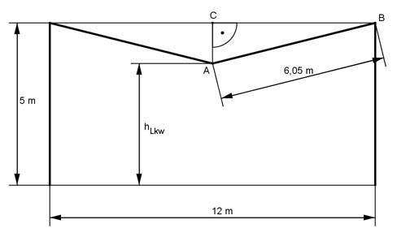

Pythagoras Aufgabe 31 Eine Lampe hängt zwischen zwei 5 m hohen und 12 m voneinander entfernten Laternenmasten. Wie hoch in m darf ein darunter fahrendes Fahrzeug maximal sein, wenn die Lampe an einem 12,10 m langen Stahlseil befestigt ist? .  In dem gleichschenkligen Dreieck ABC halbiert die Höhe die Grundseite. CB = 12 m/2 = 6 m AB = 12,1 m/2 = 6,05 m AB² = AC² + CB² |-CB² AC² = AB² - CB² AC² = 6,05² m² - 6² m² = 0,6 m² |√ AC = 0,8 m Das Fahrzeug darf maximal 5 m – AC = 5 m – 0,8 m = 4,2 m hoch sein.